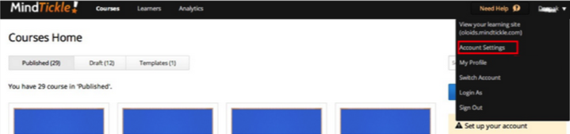
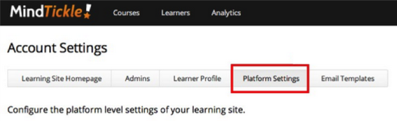
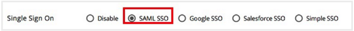

Select Account Settings from the top right dropdown menu, as shown below.

On the Account Settings screen, select Platform Settings, as shown below.

On the Platform Settings screen, select SAML SSO, as shown below.

Sign into the Okta Admin dashboard to generate this value.